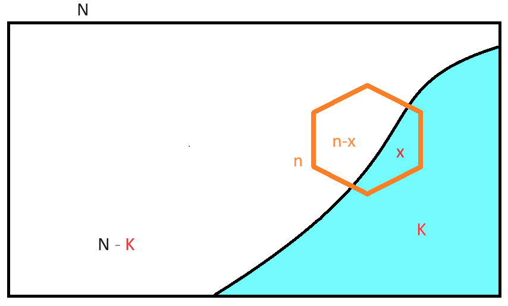
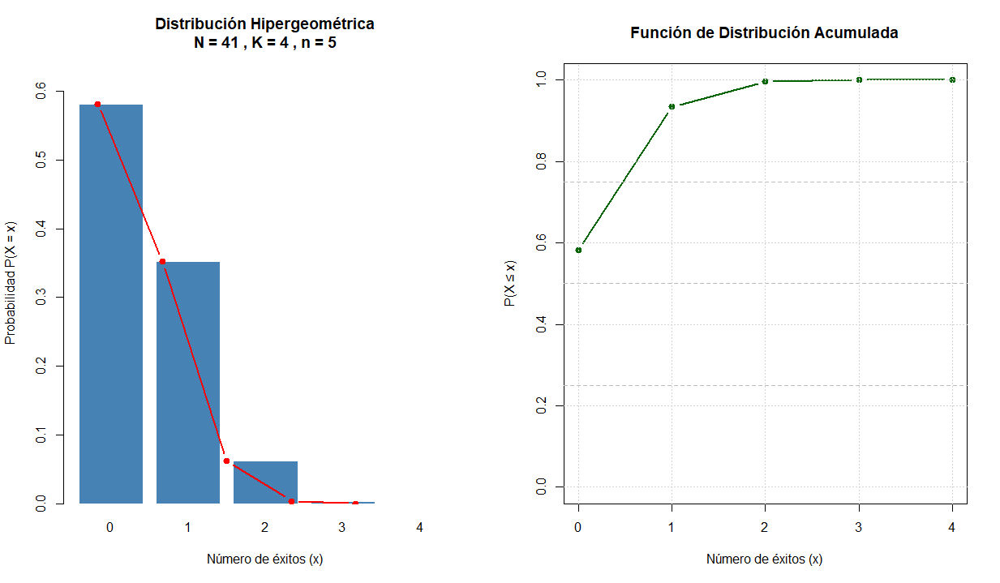
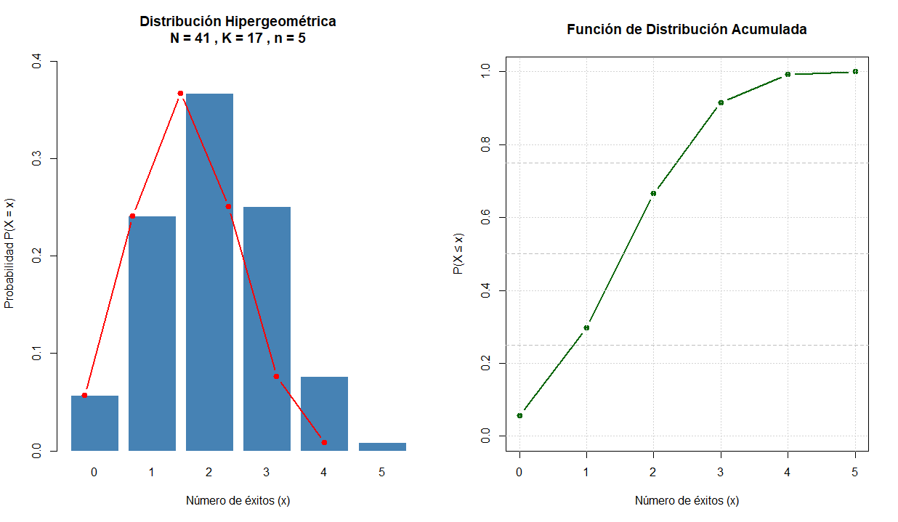

Capítulo 8 Hipergeométrica
8.1 Definición
Describe la probabilidad de obtener un número específico de “éxitos” al extraer una muestra sin reemplazo de una población finita con dos categorías mutuamente excluyentes. Su estructura responde a escenarios donde la probabilidad de éxito cambia en cada extracción, violando el supuesto de independencia constante propio de otros modelos.
Su función de masa de probabilidad (FMP) se expresa como:
\[P(X = x) = \frac{\binom K x * \binom {N - K}{n - x}}{\binom N n}\]
donde:
N: tamaño total de la población finita.
K: número total de elementos con la característica de interés (“éxitos”) en la población.
n: tamaño de la muestra extraída sin reemplazo.
x: número observado de éxitos en la muestra (variable aleatoria).
\(\binom a b\): coeficiente binomial “b tomados de a \(a\)”, que cuenta las combinaciones posibles.
Tarea
Describa el Soporte de la función
Si hay \(4\) éxitos, ¿X puede ser igual a \(6\) ?
Suponga que \(K=5\) y \(n=6\)
Suponga que \(K=6\) y \(n=5\)
Momentos principales:
Esperanza matemática: \[E[X] = n \times \frac{K}{N}\]
Varianza: \[Var(X) = n \times \frac{K}{N} \times (1 - \frac{K}{N}) \times \frac{N - n}{N - 1}\]
El término \(\frac{N - n}{N - 1}\) se denomina factor de corrección por población finita. Este ajuste reduce la varianza respecto a la binomial, reflejando la menor incertidumbre cuando se muestrea una proporción significativa de una población cerrada.

8.2 Uso en Ciencias Agronómicas
En estas disciplinas, la distribución hipergeométrica es metodológicamente pertinente cuando el muestreo se realiza sobre unidades discretas, finitas y sin reposición. Sus aplicaciones típicas incluyen:
Control de calidad en lotes de semillas: Evaluación de la proporción de semillas viables o contaminadas en un lote certificado de tamaño conocido.
Inventario forestal: Estimación de árboles infectados por patógenos en un rodal delimitado, donde cada árbol muestreado no puede ser seleccionado nuevamente.
Monitoreo de biodiversidad: Detección de especies raras o amenazadas en parcelas de muestreo cerradas, especialmente cuando la población total es censada o estimada con precisión.
Evaluación de contaminación: Análisis de presencia/ausencia de contaminantes en un número finito de muestras de suelo o agua extraídas de un sitio acotado.
Intervención asistida por IA: Las herramientas computacionales pueden calcular probabilidades hipergeométricas exactas y simular escenarios de muestreo. No obstante, el investigador debe verificar que:
la población sea efectivamente finita y conocida,
el muestreo sea verdaderamente sin reemplazo, y
no exista agrupamiento espacial que viole la aleatoriedad. Cuando estos supuestos se debilitan, modelos alternativos (binomial con corrección, beta-binomial o modelos jerárquicos) pueden ser más apropiados.
8.3 Ejemplos
8.3.1 Ejemplo 1: Control de Calidad - Semillas
Contexto: Un lote certificado contiene N = 500 semillas, de las cuales se sabe que K = 25 presentan contaminación fúngica. Se extrae una muestra aleatoria sin reemplazo de n = 30 semillas para validación. Calcule la probabilidad de encontrar exactamente k = 2 semillas contaminadas.
Paso 1. Identificar parámetros: \(N = 500\), \(K = 25\), \(n = 30\), \(k = 2\).
Paso 2. Aplicar la FMP hipergeométrica:
\[P(X = 2) = \frac{\binom {25} 2 * \binom {475}{28}}{\binom {500}{30}} \] Paso 3. Cálculo (usando software para evitar errores manuales):
\[P(X = 2) ≈ (300 × 1.847e41) / 2.119e43 ≈ 0.261\]
Paso 4. Interpretación: Existe aproximadamente un 26.1 % de probabilidad de observar exactamente 2 semillas contaminadas en la muestra de 30, bajo las condiciones del lote.
Verificación computacional (R):
dhyper(x = 2, m = 25, n = 475, k = 30)
# Resultado: 0.26138.3.2 Ejemplo 2: Monitoreo de Árboles Infectados
Contexto: En un rodal de N = 200 pinos, se ha censado que K = 40 presentan síntomas de una enfermedad vascular. Un equipo de campo selecciona n = 25 árboles al azar sin reemplazo para análisis de laboratorio.
Calcule la probabilidad de que al menos 3 árboles muestreados estén infectados.
Paso 1. Reformular el evento: P(X ≥ 3) = 1 - P(X ≤ 2) = 1 - [P(0) + P(1) + P(2)].
Paso 2. Calcular cada término con la FMP:
\(P(0) ≈ 0.0032\)
\(P(1) ≈ 0.0201\)
\(P(2) ≈ 0.0618\)
Paso 3. Sumar y complementar:
\[P(X ≤ 2) ≈ 0.0032 + 0.0201 + 0.0618 = 0.0851\]
\[P(X ≥ 3) = 1 - 0.0851 = 0.9149\]
Paso 4. Interpretación: Existe un \(91.5 \%\) de probabilidad de detectar al menos 3 árboles infectados en la muestra, lo que sugiere alta sensibilidad del protocolo de muestreo para esta prevalencia.
Verificación computacional (Python):
8.4 Ejemplo para inferencia
Nos ofrecen barato un lote de 41 bultos de agroquímicos. El vendedor establece que la oferta se debe a que solo el \(10 \%\) del lote ha cadocado.
Para mostrar la calidad del lote el vendedor permitirá que tomemos una muestra de \(4\) bultos.
Si realizamos un muestreo sobre el lote de \(41\) bultos tomando \(4\) y se encuentran más de \(3\) bultos caducos ¿Usted compra o no compra el lote?

========================================
Población total (N): 41 Éxitos en población (K): 4 Tamaño muestra (n): 5 Rango de x: [0, 4]
Probabilidades
| X | P(X=x) | F(X) |
|---|---|---|
| 0 | 5.817e-01 | 0.5817 |
| 1 | 3.525e-01 | 0.9342 |
| 2 | 6.221e-02 | 0.9964 |
| 3 | 3.555e-03 | 1.0000 |
| 4 | 4.937e-05 | 1.0000 |
Media teórica: 0.4878 Varianza teórica: 0.3962

8.5 Relación con la Distribución Binomial
La conexión entre ambas distribuciones es fundamental para la toma de decisiones en el diseño experimental:
| Característica | Binomial | Hipergeométrica |
|---|---|---|
| Muestreo | Con reemplazo (o población infinita) | Sin reemplazo (población finita) |
| Independencia | Ensayos independientes | Probabilidad cambia en cada extracción |
| Parámetros | \(n\), \(p\) | \(N\), \(K\), \(n\) |
| Varianza | \(n·p·(1-p)\) | \(n·p·(1-p)·[(N-n)/(N-1)]\) |
Regla práctica de aproximación: Cuando el tamaño muestral \(n\) representa menos del 5-10 % del total poblacional \(N\) (es decir, \(n/N < 0.05\)), el factor de corrección \((N-n)/(N-1)\) se aproxima a 1, y la distribución hipergeométrica puede aproximarse por una binomial con \(p = K/N\). Esta simplificación reduce la carga computacional sin sacrificar precisión relevante.
Consecuencias metodológicas:
Diseño eficiente: En poblaciones grandes, usar la binomial como aproximación permite aplicar pruebas e intervalos de confianza estándar.
Riesgo de subestimación: Si \(n/N\) es grande y se ignora el factor de corrección, se sobreestima la varianza, lo que puede conducir a intervalos de confianza innecesariamente amplios o a pérdida de potencia estadística.
Detección de violaciones: La IA puede ayudar a graficar la relación entre la proporción muestral y el tamaño relativo \(n/N\), alertando cuando la aproximación binomial deja de ser adecuada.
8.6 Recomendaciones
Validación de supuestos: Confirme que la población sea finita y conocida (N), que el muestreo sea aleatorio y sin reemplazo, y que no exista estructura espacial que induzca dependencia entre unidades. Cuando la población sea grande y
n/N < 0.05, documente explícitamente el uso de la aproximación binomial y justifique su pertinencia.Manejo de sobredispersión: Si la varianza observada supera a la teórica hipergeométrica, considere modelos que incorporen heterogeneidad no observada (beta-binomial) o efectos aleatorios espaciales.
Uso ético de la IA: Las plataformas de inteligencia artificial pueden generar código, calcular probabilidades exactas y sugerir diagnósticos gráficos. Sin embargo, la interpretación ecológica-agronómica, la validación de supuestos y la trazabilidad de decisiones analíticas deben permanecer bajo criterio experto. Documente versiones de software, paquetes y criterios de selección de modelos.
-
Preguntas:
¿Cómo modificaría el diseño de muestreo si la población N no se conoce con precisión, sino que está estimada con error?
¿Qué estrategia emplearía para distinguir entre variabilidad aleatoria y agregación espacial en conteos de especies raras?
¿En qué escenarios de monitoreo ambiental sería metodológicamente riesgoso aproximar la hipergeométrica por la binomial?
8.6.1 Referencias
Agresti, A. (2018). Statistical methods for the social sciences (5.ª ed.). Pearson.
Hilbe, J. M. (2014). Modeling count data. Cambridge University Press.
R Core Team. (2025). R: A language and environment for statistical computing. R Foundation for Statistical Computing. https://www.R-project.org/
SciPy Developers. (2025). SciPy: Open source software for mathematics, science, and engineering. https://scipy.org/
Thompson, S. K. (2012). Sampling (3.ª ed.). Wiley.
Zar, J. H. (2010). Biostatistical analysis (5.ª ed.). Pearson Prentice Hall.